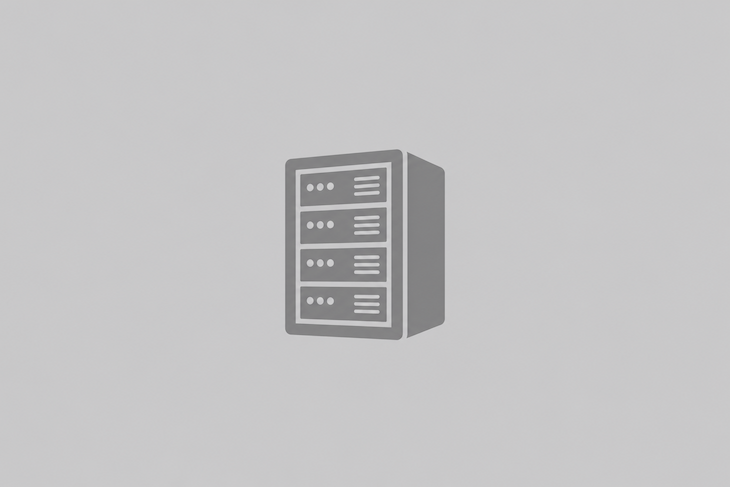

Skills
Probleemoplossend denken en analyseren.
Student Server- en Netwerkbeheer

Samen met student Y en student B werkte ik aan Project X. Tijdens dit project leerde ik samenwerken, plannen en technische oplossingen uitwerken.
Het doel van dit project was om een werkende oplossing te bouwen voor een realistische situatie. Hierbij werd aandacht besteed aan analyse, implementatie en documentatie.
Tijdens de ontwikkeling werd gebruikgemaakt van verschillende technologieën en tools die in de opleiding aan bod kwamen.
Probleemoplossend denken en analyseren.
Visual Studio Code, Git en GitHub.
HTML, CSS en Tailwind.
Werkende oplossing volgens de projectvereisten.